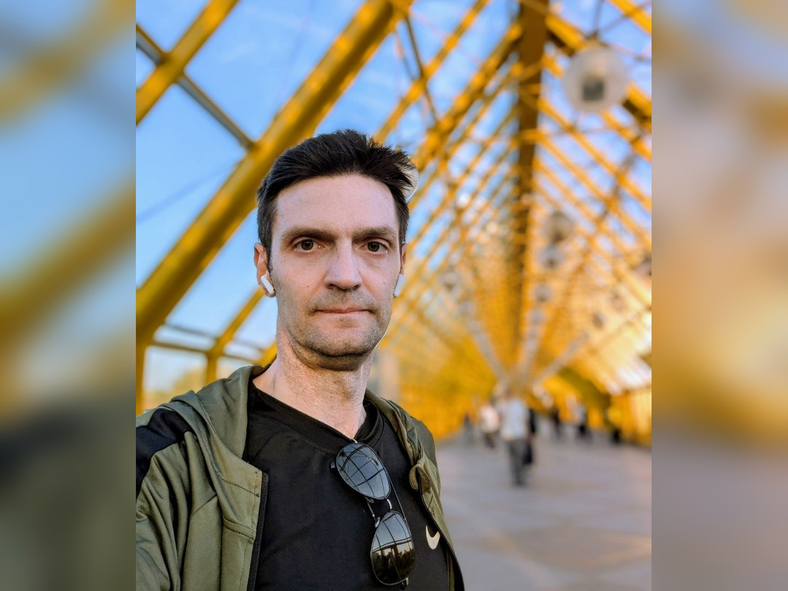

Алексей Никитин
Доцент кафедры общей математики ВМК МГУ
Этот разговор стал главой книги
«Математическая культура, которую не заменит искусственный интеллект» — личное обращение героя к читателю, цитаты,
опоры и блок «Возьми с собой».
Отрывок главы →
Отрывок главы →

01О герое
Доцент ВМК МГУ, автор проекта «Ёжик в матане» — о команде авторов из разных регионов, дисциплине публикаций и о том, что удерживает молодых учёных в науке.
02Ключевые тезисы
- Сильная лекция и сильный учитель могут изменить профессиональную траекторию человека.
- Паблик и социальные сети могут стать полноценным инструментом научной популяризации.
- Математическая культура — это не набор формул, а способ проверять, доказывать и мыслить честно.
- ИИ усиливает тех, кто умеет думать, но ослабляет тех, кто перестает проверять.
- Научная группа держится не только на руководителе, но и на учениках, которые начинают сами ставить задачи.
03Возьми с собой
Что применить
Ищи лектора или наставника, после которого тебе захочется изучать предмет глубже.
Не ограничивайся готовыми ответами: учись доказывать, проверять и строить примеры.
Научная группа держится не только на руководителе, но и на учениках, которые начинают сами ставить задачи.
Цитаты
После нескольких лекций Владимира Александровича Ильина я влюбился в предмет, который сейчас преподаю.
— Алексей Никитин
Любой преподаватель должен заниматься научной деятельностью.
— Алексей Никитин
У меня было в жизни три больших учителя.
— Алексей Никитин